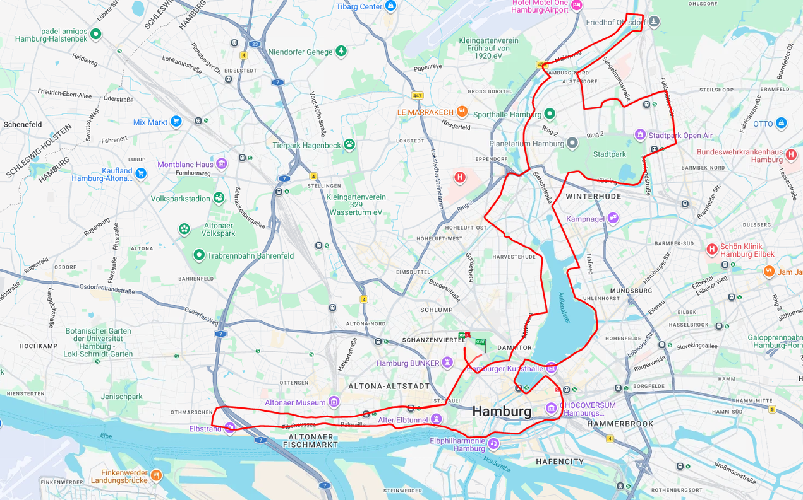

In Vorbereitung
Hamburg-Marathon am 25. April 2027
- Distanz
- 42,195 Kilometer
- Zielzeit
- Unter 4:00 Stunden
- Persönliche Bestzeit
- 4:00:51 Stunden

Hamburg soll der nächste große Schritt meiner Laufgeschichte werden. Mit einer strukturierten Vorbereitung möchte ich meine bisherige Bestzeit verbessern und erstmals die Vier-Stunden-Marke unterbieten.